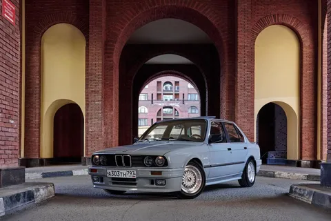
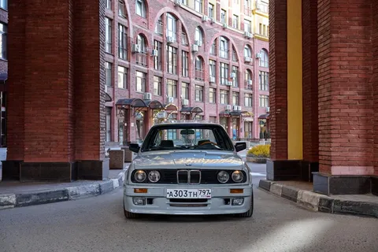
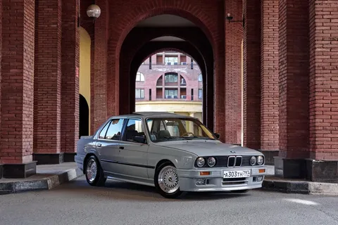
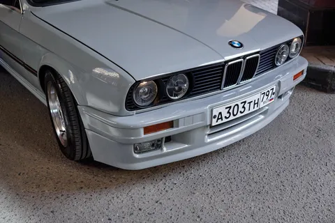
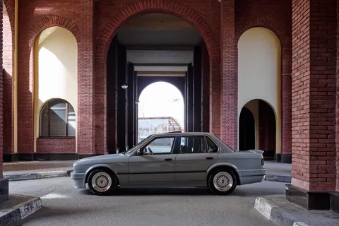
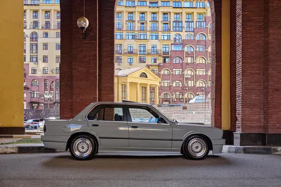
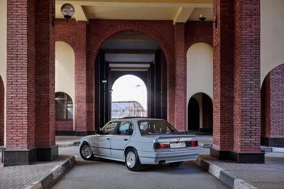
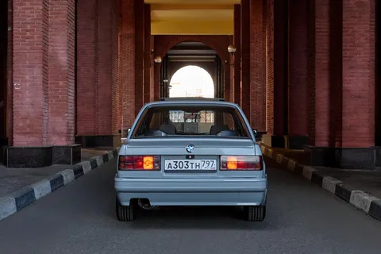
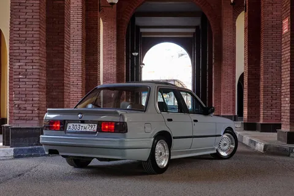

Только Чебурашка строил дом друзей, а мы построили машину друзей - #лёха_строит_бэху . Да, проект окончен. Мы с сыном Лёхой провели много увлекательных часов под капотом, под машиной, на полу разобранного салона и отлично кайфанули. Не могу не отметить помощь Азата, который раза 3 к нам приезжал помогать по дружбе - потому что общие интересы всегда сближают. С такой тачкой найти друзей можно везде - все очень тепло ее принимают и легко начинают общаться. Да, известное заблуждение "с крутой тачкой все девченки мои" на деле выглядит как "все мужики, особенно за 40"...
Все началось примерно 7 месяцев назад с покупки, и на тот момент проект носил имя Кадавр, потому что ничго другого в голову, глядя на него, не приходило. Первым делом мы машину немного расколхозили, купили много инструмента и составили план действий. Отважились сами поменять свечи, а заодно залезть эндоскопом в цилиндры. Починили неработающие стоп-сигналы. Поменяли руль. Купили и установили сиденья. Свозили в сервис на обильные слесарные работы. Поменяли задние фонари, фары (правда, не с первого раза), поворотники и туманки. Поставили ноздри, обвес. А после оклейки Кадавр стал Мышью. Поставили подаренный коллегами кассетный мафон. И, наконец, реализовали классическую формулу "колеса+посадка".
С этого момента мы стали считать, что Мышь прекрасна, и не стыдно на ней выкатиться на люди. Недавно съездили на сходку Vёshki Cars&Coffee. Это популярный во всем мире формат встреч неравнодушных к тачкам людей - традиционно люди собираются ранним субботним утром на парковке рядом с кофейней и просто общаются. В общем, мы хотели людей посмотреть и себя показать - нам это удалось. К нашей Мыши был очень живой интерес, всем она понравилась, что нам было, конечно, крайне приятно. Потом еще и профессиональную фотосессию устроили, чтобы на память остались хорошие кадры. В комментах - больше фото ("до", cars&coffee, фотосессия), заглядывайте.
Итого, мы достигли своей цели. Что дальше? Правильно, помыть и продать. С нашей стороны проект завершен, но с Мышью еще точно есть что поделать. И по технике, и по салону, да и внешку тоже можно еще дорабатывать и дорабатывать. Так что у вас есть уникальный шанс забрать у нас этот проект, который уже достаточно хорош, чтобы кайфовать от него, но еще оставляет простор для дальнейшего творчества. Цена - 900 тысяч, торг у капота. Личка - @jkennedy








